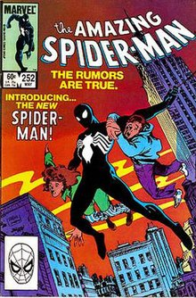

<!DOCTYPE html>
<html lang="en">

<head>
    <meta charset="UTF-8">
    <meta name="viewport" content="width=device-width, initial-scale=1.0">
    <title>Spider-Man</title>
    <link rel="stylesheet" href="style.css">
</head>

<body>
    <!-- <h1>Spider-Man</h1>


    

    
        <h2>About</h2>
        <p>
            <b>Spider-Man</b> is a superhero appearing in American comic books published by
            <a href="https://www.google.com/search?q=Marvel+Comics" target="_blank" rel="noopener noreferrer">Marvel
                Comics</a>.
            Created by writer-editor <b>Stan Lee</b> and artist <b>Steve Ditko</b>, he first appeared in the anthology
            comic book
            <a href="https://www.google.com/search?q=Amazing+Fantasy" target="_blank" rel="noopener noreferrer">Amazing
                Fantasy</a>
            #15 (August 1962) in the
            <a href="#" target="_blank" rel="noopener noreferrer">Silver Age of Comic Books</a>.
            He has been featured in comic books, television shows, films, video games, novels, and plays.
        </p>
     <div class="box">
        <p>This box can be used for additional information, fun facts, or trivia about Spider-Man.</p>
    </div> -->


    <!-- <div class="box">
        <h4>Publication Info</h4>
        <ul>
            <li><a href="#" class="boxLink">Publisher</a></li>
            <li><a href="#" class="boxLink">First Appearance</a></li>
            <li>
                Created by
                <ul>
                    <li><a href="#" class="boxLink">Stan Lee</a></li>
                    <li><a href="#" class="boxLink">Steve Ditko</a></li>
                </ul>
            </li>
        </ul>
    </div>

    <h2>Creation & Development</h2>
    <p id="description">
        In 1962, with the success of the Fantastic Four, Marvel Comics editor and head writer Stan Lee was casting for a
        new superhero idea. He said the idea for Spider-Man arose from a surge in teenage demand for comic books and the
        desire to create a character with whom teens could identify. As with Fantastic Four, Lee saw Spider-Man as an
        opportunity to "get out of his system" what he felt was missing in comic books. In his autobiography, Lee cites
        the non-superhuman pulp magazine crime fighter the Spider as a great influence, and in a multitude of print and
        video interviews, Lee stated he was further inspired by seeing a spider climb up a wall-adding in his
        autobiography that he has told that story so often he has become unsure of whether or not this is true.
    </p>
    <div class="images">
        
        
        
    </div>

    <footer>
        <p>&copy; 2024 Spider-Man Fan Page. All rights reserved.</p>
    </footer> -->
    <!-- <input type="text"> -->
     <script src="app.js"></script>
</body>

</html>